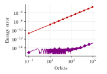
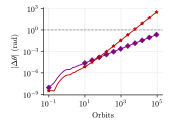
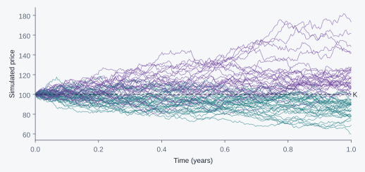
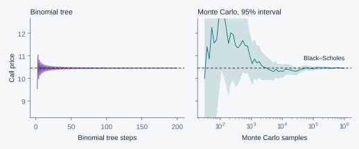

Ph.D. student in Applied Mathematics and Statistics Stony Brook University
I develop numerical methods that stay faithful to the physics over very long simulations.
With Prof. Xiangmin Jiao and Prof. Charalampos Markakis, I am building parallel-in-time solvers for
structure-preserving integrators of Hamiltonian systems, motivated by the orbital dynamics
behind gravitational-wave models. I have also worked in quantitative finance at Wells Fargo
and took part in the JPMorganChase Quantitative Research Mentorship Program.
Ph.D., Applied Mathematics and Statistics, Stony Brook University. Advised by Prof. Xiangmin Jiao and Prof. Charalampos Markakis. Expected May 2029.
2019–2022
M.S., Applied Mathematics, University of Puerto Rico at Mayagüez. Thesis on conservative finite difference methods for nonlinear Schrödinger systems, advised by Prof. Paul Castillo.
2014–2017
B.S., Mathematics, Universidad Pedagógica Nacional Francisco Morazán, Honduras.
Research
Parallel-in-time integration that preserves geometry
Gravitational-wave detectors recognize merging black holes and neutron stars by comparing
their data with waveform models, and those models are built from solutions of the binary's
equations of motion. The Laser Interferometer Space Antenna (LISA), planned for launch in
2035, will follow some sources for months or years, over tens of thousands of orbits, so
the computed orbital phase has to stay accurate over that whole horizon.
LISA will be a triangle of three spacecraft that exchange laser beams across arms of
2.5 million km and follow Earth around the Sun. A passing gravitational wave changes the
arm lengths by a tiny amount.
The orbits obey Hamiltonian equations. Integrators that respect the geometry of Hamiltonian
flow, namely time-symmetric and symplectic methods, keep energy errors bounded instead of
letting them drift. For general Hamiltonians, however, the high-order methods are implicit
and strictly sequential: step n+1 waits for step n.
Elliptic orbit.
Two bodies with mass ratio 0.45 move about their centre of mass (cross) under Newtonian
gravity, integrated live in your browser with the symplectic leapfrog method. The
post-Newtonian models in my research add relativistic corrections to this problem.
My doctoral work asks whether many time steps can be computed at once without giving up
that structure. Batched self-consistent iteration (BSCI) guesses a whole block of
steps, recomputes every step from the guess independently of the others, and reassembles
the trajectory with a prefix sum, the same operation that adds a list of numbers in
logarithmic depth on a parallel machine. At exact convergence it reproduces the sequential
Gauss–Legendre or Hermite integrator, so it inherits time symmetry and, for Gauss–Legendre,
symplecticity. We showed that batching keeps the asymptotic contraction rate of the
sequential solver, and we designed a Hermite-curve initializer so that, at fine steps, a
single sweep often suffices. On post-Newtonian two-body Hamiltonians, our C++
implementation reaches peak single-core speedups between 2.90× and 6.23× over sequential
integrators of the same family and order.


Energy error (left) and phase error (right) on a circular fourth-order post-Newtonian
orbit over 105 orbits, at comparable computing cost. Fourth-order Gauss–Legendre
computed with BSCI keeps the phase error below a quarter radian; RK4 passes one radian
after about 5,200 orbits.
Conservative schemes for nonlinear Schrödinger systems
Coupled nonlinear Schrödinger and Gross–Pitaevskii equations describe light pulses in
optical fibers and Bose–Einstein condensates. Their solutions conserve the mass of each
component and a Hamiltonian, and they support solitons, localized waves that keep their
shape as they travel. When solitons collide, the coupling between components decides
whether they pass through each other unchanged or exchange mass and radiate.
Two solitons, one in each component of a coupled nonlinear Schrödinger system (violet and
teal), travel toward each other, collide and bounce apart. The top panel shows the density
of each wave and the panel below traces their paths in space and time. Illustration
computed with a split-step Fourier method; the mass of each component is conserved to
10−12.
For my M.S. thesis with Prof. Paul Castillo, I developed field-directional splitting schemes that
update one component at a time while conserving the discrete mass of every component and
the discrete Hamiltonian exactly, and reach higher order in time through symmetric
composition. We extended them to fourth- and sixth-order explicit and compact finite
differences with general nonlinear couplings, and to two-dimensional coupled
Gross–Pitaevskii systems, where we proved convergence of order τ + h2p
in the thermodynamically stable regime and built energy-conserving schemes of order
τ2q + h2p.
Two components of a Bose–Einstein condensate in a two-dimensional harmonic trap, with height
showing the density of each one. They start fully mixed, but the repulsion between them is
stronger than within each, so the mixture breaks up into domains that merge and settle with
one component in the centre (teal) and the other in a ring around it (violet). Illustration
computed with the coupled Gross–Pitaevskii equations, with a small damping term so the
system relaxes to its ground state.
Machine learning for lightning above thunderstorms
Transient luminous events are brief optical flashes in the upper atmosphere, triggered by
lightning in the thunderstorms below. They come in several forms, and their rapid, random
occurrence makes classifying the thousands of images collected by observers worldwide slow
and laborious.
The main kinds of transient luminous events and the altitudes where they occur, drawn
schematically above a thunderstorm.
In a NASA-supported project at the University of Puerto Rico at Mayagüez with Vidya Manian,
I built a workflow to preprocess and label TLE images contributed by observers around the
world, many from the Caribbean TLE observatory, covering seven classes: sprites, elves,
halos, sprite–halos, sprite–jellyfish, blue jets, and gigantic jets. After bilateral
filtering and augmentation by rotation, translation, and flipping, we compared a Vision
Transformer with four convolutional networks (ResNet50, ResNet18, GoogLeNet, and
SqueezeNet). With transfer learning, ResNet50 reached about 99% accuracy.
Publications
Manuscript
Batched self-consistent iteration for Gauss–Legendre and Hermite integration of Hamiltonian systems.A. Aguilera, X. Jiao, and C. Markakis.To be submitted to Numerical Algorithms, 2026.
Peer-reviewed journal articles
Artificial intelligence approach for classifying images of upper-atmospheric transient luminous events.A. Aguilera and V. Manian.Sensors 24(10), 3208, 2024.doi:10.3390/s24103208
A conservative splitting high-order finite difference method for coupled Gross–Pitaevskii equations in 2D.P. Castillo, A. Aguilera, and J. Bermudez.The European Physical Journal Plus 138(9), 789, 2023.doi:10.1140/epjp/s13360-023-04402-6
Método conservativo de diferencias finitas de alto orden para una clase de sistemas de Schrödinger no lineales.A. Aguilera, P. Castillo, and S. Gómez.Revista Mexicana de Física E 19(1), 010205, 2022.doi:10.31349/RevMexFisE.19.010205
Structure preserving-field directional splitting difference methods for nonlinear Schrödinger systems.A. Aguilera, P. Castillo, and S. Gómez.Applied Mathematics Letters 119, 107211, 2021.doi:10.1016/j.aml.2021.107211
Experience
Industry
Aug–Sep 2026
Quantitative Research Mentorship Program, JPMorganChase. Implemented and compared Black–Scholes, Monte Carlo, and binomial-tree option pricing, analyzing accuracy, convergence, and sensitivities. Developed an adaptive execution strategy from tick-level limit-order-book data and microstructure signals that reduced average simulated execution spread by about 26% against the benchmark.


Pricing a one-year European call (spot and strike 100, 5% rate, 20% volatility). Top:
60 simulated price paths under geometric Brownian motion; violet paths finish above the
strike. Bottom: the binomial tree and Monte Carlo estimates converge to the Black–Scholes
price of 10.45. Illustration computed for this page.
Jun–Aug 2026
Quantitative Analytics Intern, Capital Markets, Wells Fargo, Charlotte, NC. Built an interactive debugging framework for a traded-products risk and pricing platform that isolates anomalous valuation, P&L, and sensitivity results by desk, book, trade, and metric, and a local calculation workflow for reproducible investigations without modifying production models.
Teaching
2024–present
Graduate Teaching Assistant, Stony Brook University. Differential Equations and Boundary Value Problems I, Applications of Complex Analysis, Numerical Analysis I, Analytical Methods.
2019–2022
Graduate Teaching Assistant, University of Puerto Rico at Mayagüez. Precalculus and Calculus I.
Technical skills
C++, Python, Java, Eigen, OpenMP, oneTBB, CMake, Git, Linux, and HPC clusters. Spanish and English.
IACS Travel Award, Institute for Advanced Computational Science, Stony Brook University.
2022
First place, graduate poster session, IPAM Latinx in the Mathematical Sciences Conference, UCLA.
Selected talks
Aug 2026
Time-symmetric and symplectic parallel-in-time Gauss–Legendre and Hermite methods for Hamiltonian systems. AMMCS 2026, Waterloo, Canada.
Jun 2023
Conservative high-order finite difference method for the coupled nonlinear Schrödinger equation in 1D. CIMPA Research Summer School, Havana, Cuba.
Jul 2022
Conservative high-order finite difference method for systems of coupled nonlinear Schrödinger equations. Poster, IPAM Latinx in the Mathematical Sciences Conference, UCLA.
Mar 2022
Conservative method for the numerical approximation of nonlinear Schrödinger systems. Physics Department Colloquium, University of Puerto Rico at Mayagüez.
Aug 2021
Structure preserving-field directional splitting difference methods for nonlinear Schrödinger systems. Escuela Nacional de Optimización y Análisis Numérico, Mexico.
Outside research
I like to travel, often around conferences and summer schools, and I am learning to play
electric guitar on a PRS SE CE 24.